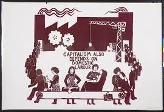
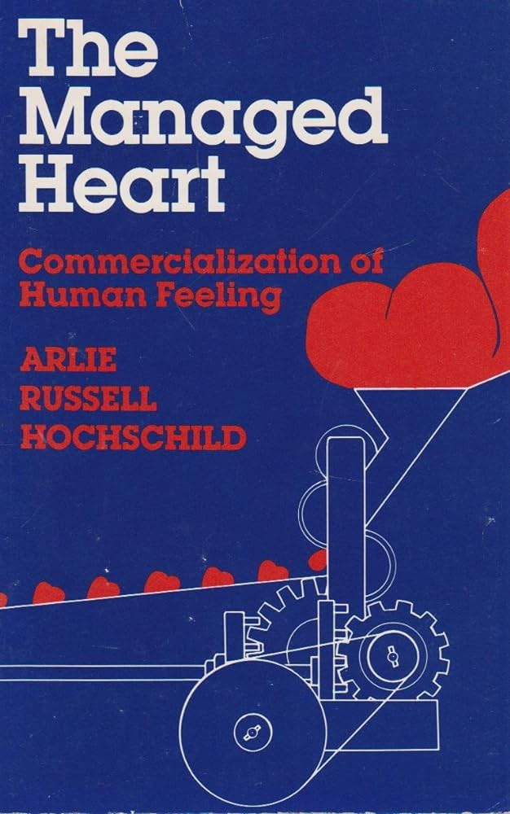

Untitled
Etudes sur le sexe en science du travail
Analyse de l’article de Danielle Chabaud sur les rapports de sexe dans le travail et la famille
L’article de Danielle Chabaud Chabaud (1984) explore l’intégration des questions de genre dans la sociologie du travail et de la famille, soulignant un renouvellement des perspectives grâce aux recherches qui comparent les pratiques des hommes et des femmes. Ces études mettent en lumière comment le travail et la famille s’articulent différemment selon les genres, remettant en question les notions traditionnelles de travail et d’appartenance de classe.
Points clés :
Contexte : L’intérêt pour les problématiques de sexe en sociologie a été stimulé par le mouvement féministe des années 70, entraînant un renouvellement de la discipline.
Domaines d’impact : Les domaines du travail et de la famille sont particulièrement affectés, où la notion de travail domestique et l’activité salariée des femmes révèlent l’importance des rapports de sexe.
Travail des femmes : L’analyse du travail des femmes, en tant qu’objet sociologique légitime, révèle la discontinuité de leur activité professionnelle, liée à leur rôle dans le travail reproductif et domestique.
Implications : Les trajectoires professionnelles des femmes sont indissociablement liées à leur situation familiale, remettant en cause la pertinence de certaines notions comme l’inactivité professionnelle pour les femmes.
Renouvellement des Approches en Sociologie du Travail et de la Famille
Introduction à la Problématique de Sexe
Les questions de sexe en sociologie, particulièrement dans les études sur le travail et la famille, ont connu un développement notable. Ce renouvellement est dû à l’analyse de l’articulation entre le travail salarié et le travail domestique, soulignant l’importance cruciale des rapports de sexe.
Évolution des Recherches
La prise en compte des différences de sexe a permis de questionner et de redéfinir les frontières entre la sociologie du travail et celle de la famille. La reconnaissance du travail domestique comme forme de travail a révélé la dimension sociale des rapports de sexe, en particulier dans le contexte du travail salarié des femmes.
Analyse du Travail des Femmes
L’intégration des problématiques de sexe en sociologie du travail est relativement récente. Historiquement, le travail des femmes était souvent vu comme une déviance par rapport à des modèles construits sans considérer les différences de sexe. Ce n’est que récemment que l’activité salariée des femmes est devenue un sujet d’étude légitime, permettant des analyses comparatives entre hommes et femmes.
Discontinuité de l’Activité des Femmes
Un aspect central de l’étude du travail des femmes est sa discontinuité, liée à leur rôle dans le travail reproductif. Des enquêtes spécifiques ont mis en évidence que l’activité professionnelle des femmes est fortement influencée par leur situation familiale, révélant des trajectoires professionnelles distinctes et complexes.
Mobilité Professionnelle et Inactivité
Les trajectoires professionnelles des femmes révèlent une mobilité horizontale caractérisée par des emplois divers, souvent précaires et mal rémunérés. La notion d’inactivité professionnelle s’avère inadéquate pour décrire les réalités du travail féminin, qui inclut également des activités rémunérées sporadiques et non déclarées.
Vers une Nouvelle Compréhension du Travail
L’analyse du travail des femmes, en prenant en compte les rapports de sexe, offre une perspective enrichie sur la division du travail entre les sexes. Elle souligne l’importance de considérer à la fois les dimensions professionnelles et familiales pour comprendre les dynamiques de travail et les trajectoires professionnelles des femmes.
Qualification des Femmes
Les compétences des femmes, souvent acquises dans le cadre du travail domestique, sont à la fois invisibilisées et essentielles dans le marché du travail, particulièrement dans des emplois dévalorisés. Cette situation soulève la question de la reconnaissance de leurs compétences réelles et de la manière dont elles sont transférées et exploitées dans le travail salarié.
Familles, Sexes et Classes
Les recherches sur la famille n’ont pas toujours intégré de manière symétrique les questions de production et de reproduction, ce qui a conduit à une variété d’approches dans l’étude des pratiques familiales. Certaines études ont mis en avant une indistinction des sexes au sein du ménage, tandis que d’autres ont souligné les rôles distincts et les savoirs de classe portés différemment par les hommes et les femmes.
Approches Diverses sur l’Appartenance de Classe
Des études ont montré que l’appartenance de classe peut être vécue et exprimée différemment par les hommes et les femmes au sein de la même famille, posant la question de l’articulation entre les trajectoires professionnelles des deux sexes. Ces dynamiques familiales complexes révèlent des stratégies variées d’adaptation et de négociation des rôles et des statuts sociaux.
Enjeux Théoriques et Pratiques
La reconnaissance de la diversité des configurations familiales et des trajectoires professionnelles des hommes et des femmes invite à repenser les notions de classe et de travail à travers le prisme des rapports de sexe. Cette approche met en lumière la nécessité d’une analyse plus nuancée et intégrée des phénomènes sociaux, tenant compte à la fois des dimensions économiques, sociales et de genre.
Rôles ou Rapports de Sexe : Perspectives Théoriques et Implications pour la Recherche
Distinction Théorique
La distinction entre “rôles de sexe” et “rapports de sexe” reflète des orientations théoriques différentes. Les rôles de sexe sont souvent étudiés à travers la répartition des tâches domestiques, tandis que les rapports de sexe mettent l’accent sur les relations sociales et de pouvoir entre les sexes, soulignant que la participation des hommes et des femmes au travail domestique a des significations différentes.
Analyse du Travail Domestique
Les études se concentrant sur les tâches ménagères tendent à adopter une approche comptable, assumant que les tâches peuvent être évaluées de manière neutre. En revanche, les analyses des rapports sociaux de sexe montrent que ces tâches s’inscrivent dans des rapports de pouvoir et de service, différenciés selon le sexe.
Négociation et Échange dans le Couple
Des recherches récentes sur la négociation entre conjoints introduisent une dimension quantitative dans l’analyse des rapports maritaux, traitant la relation conjugale comme un échange marchand où les partenaires négocient leur degré d’appropriation mutuelle. Cette approche tend à neutraliser la dynamique de pouvoir inhérente aux relations de sexe.
Extension des Rapports de Sexe
La question de l’extension des rapports de sexe dépasse la simple relation maritale pour englober l’ensemble des relations sociales. Les travaux sur la reproduction des différences de sexe suggèrent que l’éducation, l’emploi, et d’autres domaines de la vie contribuent à perpétuer ces rapports, nécessitant une analyse longitudinale pour comprendre leur évolution au cours de la vie.
Implications pour la Recherche
Les problématiques de sexe encouragent le développement d’études comparatives sur le travail et les trajectoires de vie des hommes et des femmes, ainsi que des recherches longitudinales pour examiner les changements dans les rapports de sexe. Elles invitent également à repenser les notions de classe sociale, en tenant compte de la manière dont les inscriptions professionnelles et le travail domestique façonnent différemment l’appartenance de classe des hommes et des femmes.
Définir les termes
Exploitation domestique et débats
On assiste à une réflexion critique sur l’exploitation du travail domestique des femmes, introduite dans les années 1970. Cette exploitation est présentée comme distincte de l’exploitation capitaliste, remettant en question la reconnaissance et la valorisation du travail non rémunéré au sein du foyer.
Le “Domestic Labour Debate”
Les années 1974 à 1980 ont été marquées par un débat important parmi les féministes, principalement au Royaume-Uni et aux États-Unis, connu sous le nom de “Domestic Labour Debate” (DLD)Molyneux (1979). Ce débat portait sur la nature et la reconnaissance du travail domestique, souvent invisible et non rémunéré, effectué principalement par les femmes.

Il existe des perspectives différentes au sein du mouvement féministe concernant les causes de cette exploitation. Certaines l’attribuaient à des facteurs “naturels”, tandis que d’autres voyaient le capitalisme comme la principale source et bénéficiaire de cette exploitation.
Il existe débat profond sur la nature et la reconnaissance du travail domestique, souvent invisible et non rémunéré, principalement accompli par les femmes.
Divergences d’analyse
Vision traditionnelle : Le travail des hommes est souvent perçu comme productif et générateur de richesses dans la sphère publique, tandis que le travail des femmes est assigné à la “reproduction”, c’est-à-dire l’entretien de la force de travail, abaissant ainsi indirectement le coût du travail pour les employeurs.
Débat sur le travail domestique (DLD) : Ce débat a mis en lumière les différentes interprétations du travail ménager, oscillant entre une reconnaissance de son exploitation économique et des théories le considérant comme non exploité car non productif dans le sens capitaliste.
Enjeux théoriques
La question centrale réside dans la possibilité d’intégrer l’oppression spécifique des femmes dans l’analyse marxiste du capitalisme ou de la traiter comme un système distinct. Ce débat n’a pas seulement des implications théoriques mais aussi stratégiques, déterminant les alliances politiques et les stratégies de lutte.
Contributions féministes : Des théoriciennes comme Mariarosa Dalla Costa Della Costa and James (1972) ont tenté de revaloriser le rôle des femmes dans l’économie capitaliste en soulignant leur contribution essentielle à la reproduction de la force de travail, tout en critiquant l’approche réductrice qui lie exclusivement le travail domestique à cette fonction.
Critiques et reconceptualisations : Le débat a aussi révélé des limites dans l’analyse traditionnelle, notamment l’incapacité à rendre compte de la spécificité du travail domestique et de son exploitation directe et intrinsèque, indépendamment de sa contribution à la reproduction de la force de travail capitaliste.
Comprendre le Travail à la Maison
Dans son livre, Christine Delphy Delphy (1970) remet en question l’idée habituelle sur le travail à la maison. Elle dit que ce travail est souvent vu comme peu important parce qu’il est gratuit, pas parce qu’il n’a pas de valeur. Elle pense que si ce travail était payé, les gens le valoriseraient plus. Elle explique que cela montre comment les idées sur les hommes et les femmes influencent ce que nous pensons du travail et de l’argent. Son livre encourage à penser différemment sur le travail à la maison.
Nouvelle Idée sur le Travail à la Maison
Christine Delphy “Delphy-Lepatrimoineet-1969.pdf” (n.d.) dit que le travail à la maison devrait être vu comme important, même s’il n’est pas payé. Elle pense que cela aiderait si les gens reconnaissaient le travail fait à la maison et si les familles changeaient la façon dont elles répartissent les tâches.
Le Travail à la Maison, c’est Quoi ?
Le travail à la maison, c’est tout ce que les gens font pour s’occuper de la maison et de la famille, comme cuisiner et nettoyer. La plupart du temps, ce sont les femmes qui font ce travail, et elles ne sont pas payées pour ça.
Les femmes ont toujours fait ce travail, mais maintenant, elles ont plus d’options sur ce qu’elles veulent faire. L’évolution des rôles de genre et l’accès accru aux opportunités pour les femmes montrent une transformation significative dans la société. Traditionnellement, les femmes étaient souvent cantonnées à des rôles spécifiques, principalement liés au travail domestique et aux soins aux membres de la famille. Ces tâches, essentielles mais non rémunérées et peu valorisées socialement, constituaient le cœur de leurs responsabilités.
Avec le temps, les progrès en matière de droits des femmes, l’éducation, et les changements législatifs ont ouvert de nouvelles voies. Les femmes ont désormais accès à une gamme plus large de choix professionnels et personnels. Elles peuvent aspirer à des carrières dans presque tous les domaines, y compris ceux traditionnellement dominés par les hommes, et participer plus activement à la vie publique et politique.
Certaines personnes commencent à dire que ce travail est important, même s’il n’est pas payé. C’est ce que montre un livre appelé “Globalization, Gender and the Davos Man” écrit par Benería.
Le livre “Globalization, Gender and the Davos Man Beneria (1999)” de Benería examine comment la mondialisation influence les rôles de genre, en mettant un accent particulier sur le concept de “Davos Man”. Ce terme fait référence à une certaine élite économique et politique qui se réunit chaque année au Forum économique mondial de Davos, en Suisse. L’ouvrage analyse les effets de la mondialisation sur les inégalités de genre, soulignant comment les politiques et pratiques économiques mondiales peuvent renforcer les disparités entre les hommes et les femmes. Benería critique notamment la manière dont le modèle économique favorise une certaine masculinité liée au pouvoir et à la réussite professionnelle, au détriment de questions importantes telles que l’équité de genre, la justice sociale et la santé.
Reconnaissance du travail non rémunéré
La prise de conscience de l’importance du travail non rémunéré, souvent accompli par les femmes, progresse. Ce travail inclut les soins aux enfants, l’entretien de la maison, et l’assistance aux membres âgés de la famille. Bien qu’il ne soit pas payé, ce travail est essentiel pour le bien-être des familles et le fonctionnement de la société.
La valorisation de ce travail souligne son rôle crucial dans l’économie. Les tâches domestiques et de soins contribuent de manière significative au développement social et économique, bien que cette contribution ne soit pas toujours reconnue dans les statistiques économiques traditionnelles.
Des discussions sur la nécessité d’intégrer ce travail dans les comptes nationaux et de reconnaître sa valeur à travers des politiques de soutien, comme des allocations ou des crédits de sécurité sociale, gagnent en importance. Cette évolution vise à réduire les inégalités de genre et à promouvoir une répartition plus équitable des responsabilités domestiques et de soin entre les hommes et les femmes.
Le travail domestique et de soins constitue une part essentielle de notre société, mais il reste souvent invisible et sous-évalué. Cette analyse examine ces dimensions souvent négligées, mettant en lumière l’importance de les reconnaître pour comprendre les dynamiques de genre et de pouvoir.
Redéfinition du Travail Domestique par Christine Delphy
Christine Delphy remet en question l’idée que le travail domestique n’est pas productif. Elle soutient que cette activité est essentielle d’un point de vue économique et social Delphy (1978).
Travail Ménager vs Travail Domestique: Un Débat Théorique et Économique
Le travail ménager, longtemps perçu sous un angle descriptif et quantitatif, a gagné une nouvelle dimension avec les mouvements néoféministes des années 1970. Ces mouvements ont posé le travail ménager comme un problème théorique, soulignant son importance économique et sociale. La distinction entre travail ménager et travail domestique s’est alors imposée, reconnaissant le travail ménager comme une forme de travail à part entière, bien qu’il soit gratuit.
Divergences et Points de Consensus
Un consensus émerge sur deux points principaux: le travail ménager est à la fois un travail et un travail gratuit. Cependant, les divergences apparaissent autour de la productivité de ce travail, certains se concentrant sur son aspect de “tâche” et d’autres sur sa gratuité et son exploitation par le capitalisme. La question centrale reste la définition précise du travail ménager et de son contenu.
La définition courante du travail ménager inclut les tâches réalisées à l’intérieur de la maison par les femmes. Cette définition, bien qu’empirique, n’embrasse pas pleinement les attributs économiques du travail ménager, qui peuvent s’étendre au-delà des activités traditionnellement considérées comme ménagères.
Vers une Définition Plus Large
Pour avancer dans le débat, il est suggéré d’adopter une définition formelle du travail ménager, basée sur ses caractéristiques structurelles et économiques plutôt que sur une liste d’activités. Cela implique de considérer le travail ménager dans son ensemble, incluant les travaux gratuits qui dépassent le cadre classique des tâches ménagères, et de questionner si toute activité ménagère correspond à un travail gratuit.
L’Autoconsommation Comme Exemple
La discussion se tourne également vers l’autoconsommation des ménages, notamment dans le secteur agricole, comme un domaine apparenté mais distinct du travail ménager. Cette approche permet d’explorer les limites de la définition actuelle du travail ménager et d’envisager une conception plus large incluant d’autres formes de production domestique.
Selon Delphy, le travail à la maison contribue de manière significative à l’économie, même si cette contribution est souvent ignorée ou sous-évaluée. Elle critique la manière dont le modèle familial traditionnel dissimule la valeur réelle de ce travail.
Problématique de la Comptabilisation
Le travail ménager est souvent dissocié de l’autoconsommation des ménages dans les comptabilités nationales. Cette séparation arbitraire ignore la nature productive de toutes les activités menant à la consommation finale, qu’elles soient ou non monétisées. La discussion souligne l’incohérence de ne pas considérer toutes les formes de travail domestique comme productives, remettant en question les critères de leur évaluation économique.
Travail Domestique: Un Concept Élargi
Delphy propose d’élargir la définition du travail ménager pour inclure non seulement les tâches traditionnellement associées mais aussi les activités non rémunérées effectuées au sein du foyer, qui bénéficient à d’autres membres de la famille. Cette définition plus large reconnaît le travail domestique comme un ensemble de relations de travail caractérisées par l’absence de rémunération monétaire, plutôt que par la nature spécifique des tâches effectuées.
Distinction entre Travail Productif et Rémunération
L’analyse distingue entre le caractère productif du travail et sa rémunération. Un travail peut être considéré comme productif sans pour autant être rémunéré par une entité extérieure, surtout si l’activité bénéficie directement à son producteur. Cela remet en question l’idée que tout travail domestique devrait être compensé par l’État, soulignant que le critère de productivité ne repose pas sur la rémunération mais sur la valeur ajoutée à l’économie.
Gratuité du Travail Domestique
Le travail domestique est décrit comme gratuit non parce qu’il est sans valeur, mais parce qu’il est effectué sans échange monétaire, souvent dans un contexte familial où les contributions ne sont pas directement monétisées. Cette gratuité reflète une relation de travail spécifique au sein du foyer, où les services fournis ne sont pas compensés financièrement mais ont une valeur économique et sociale intrinsèque.
Vers une Reconnaissance Plus Large du Travail Domestique
Delphy plaide pour une reconnaissance plus large du travail domestique, suggérant que le terme englobe toutes les formes de travail non rémunéré effectuées dans le cadre familial. Cette approche vise à mieux comprendre et valoriser le travail domestique dans son ensemble, en reconnaissant sa contribution essentielle à l’économie et à la société.Delphy plaide pour une reconnaissance accrue du travail domestique, soulignant son importance pour le fonctionnement de la société et l’économie Delphy (2003)
Définition par Delphy & Léonard
« Nous mettons l’accent sur le travail pratique, émotionnel, sexuel, procréatif et symbolique des femmes pour les hommes à l’intérieur des rapports familiaux. Ceci comprend le travail dit “ménager”, le travail de participation aux occupations des hommes, les services émotionnels aux membres de la famille, les soins aux enfants, les soins aux personnes malades et fragiles, les “services sexuels” – le “devoir conjugal” – fournis au mari, et la gestation » Delphy and Leonard (2019)
Élargissement de la Notion de Travail Domestique
Cette redéfinition du travail domestique met en lumière sa complexité et son étendue, allant bien au-delà des simples tâches ménagères. Elle souligne le rôle multidimensionnel des femmes au sein du foyer, couvrant divers aspects :
Travail pratique : Les tâches quotidiennes de gestion et d’entretien du foyer, comme le nettoyage, la cuisine, et les courses.
Soutien émotionnel : Le soutien psychologique apporté aux membres de la famille, contribuant à leur bien-être émotionnel et à leur stabilité.
Contributions sexuelles et procréatives : Les relations intimes et la reproduction, considérées ici comme des contributions au sein du cadre familial.
Soins : L’attention et les soins apportés aux enfants, aux personnes âgées, ou aux membres de la famille malades ou fragiles.
Participation aux activités des hommes : L’engagement dans les loisirs ou les intérêts des partenaires masculins, renforçant la cohésion et la dynamique familiale.
Travail symbolique : Les rôles et responsabilités assumés qui contribuent à l’identité et à la cohésion de la famille, tels que la transmission des valeurs et des traditions.
Cette redéfinition du travail domestique met en lumière sa complexité et son étendue, allant bien au-delà des simples tâches ménagères. Elle souligne le rôle multidimensionnel des femmes au sein du foyer, couvrant divers aspects :
Travail pratique : Les tâches quotidiennes de gestion et d’entretien du foyer, comme le nettoyage, la cuisine, et les courses.
Soutien émotionnel : Le soutien psychologique apporté aux membres de la famille, contribuant à leur bien-être émotionnel et à leur stabilité.
Contributions sexuelles et procréatives : Les relations intimes et la reproduction, considérées ici comme des contributions au sein du cadre familial.
Soins : L’attention et les soins apportés aux enfants, aux personnes âgées, ou aux membres de la famille malades ou fragiles.
Participation aux activités des hommes : L’engagement dans les loisirs ou les intérêts des partenaires masculins, renforçant la cohésion et la dynamique familiale.
Travail symbolique : Les rôles et responsabilités assumés qui contribuent à l’identité et à la cohésion de la famille, tels que la transmission des valeurs et des traditions.
Contexte de la critique par Delphy
Christine Delphy, sociologue et féministe française, s’attaque à la perception traditionnelle du travail domestique. Elle argumente contre l’idée reçue que le travail effectué au sein du foyer est non productif et sans valeur économique. Delphy met en lumière comment cette activité, souvent réalisée par des femmes, joue un rôle crucial dans le maintien de la structure économique globale.
Arguments principaux
Valeur économique du travail domestique : Delphy avance que les tâches ménagères et la prise en charge des enfants, bien qu’elles ne soient pas rémunérées, contribuent directement à l’économie. Elles permettent aux autres membres de la famille de travailler à l’extérieur, générant ainsi des revenus pour le foyer et l’économie en général.
Critique du contrat familial traditionnel : La sociologue critique le contrat familial qui repose sur une division du travail selon le genre, où les hommes sont généralement les pourvoyeurs et les femmes sont chargées du travail domestique. Cette organisation masque la valeur économique du travail domestique et maintient les femmes dans une position de dépendance économique.
Plaidoyer pour la reconnaissance : Delphy plaide pour que le travail domestique soit reconnu comme un travail à part entière, nécessitant compétences et temps. Elle appelle à des mesures qui permettraient de valoriser cette contribution, comme une rémunération ou une prise en compte dans les droits sociaux (retraite, sécurité sociale).
La non-reconnaissance du travail domestique a des implications profondes, notamment en termes d’inégalités de genre. Elle perpétue une vision de la société où le travail rémunéré est valorisé au détriment du travail de soin, essentiel pourtant à la cohésion sociale et au bien-être collectif.
Évolution et Reconnaissance du Travail Domestique
Les Débuts du Débat sur le Travail Domestique
Dès les années 1970, le travail domestique devient un sujet central dans les discussions féministes, mettant en lumière l’exploitation des femmes au sein du foyer. Christine Delphy et d’autres ont distingué le travail ménager du travail domestique, soulignant que la famille est souvent le lieu où se manifeste l’exploitation économique des femmes par les hommes. Ces débats ont mis en avant l’interdépendance entre les sphères privée et professionnelle et ont pointé du doigt l’invisibilité et la gratuité du travail domestique comme obstacles majeurs à sa reconnaissance sociale.
Élargissement des Recherches Sociologiques
Avec le temps, la sociologie du travail et de la famille a pris le relais, explorant la conciliation entre vie familiale et vie professionnelle, la disponibilité permanente attendue des femmes, la paternité, la conjugalité et, plus récemment, les pratiques domestiques des hommes. Ces études ont souvent révélé la domination masculine et ont envisagé la famille comme un espace d’échanges et de transactions.
Reconnaissance Politique et Économique
Le travail domestique a été propulsé sur la scène politique dans les années 1980, marquant un tournant dans sa reconnaissance. L’évaluation monétaire de ce travail a permis de le positionner comme une question économique et sociale cruciale, révélant son poids dans l’économie et ouvrant la voie à la création d’emplois familiaux, souvent occupés par des femmes. Cette période a vu le travail domestique comme un potentiel “gisement d’emplois”, bien que cela ait souvent signifié le transfert des tâches domestiques vers d’autres femmes.
Inégal Partage des Tâches Domestiques
Malgré ces avancées, l’inégal partage des tâches domestiques entre hommes et femmes reste une réalité persistante. Historiquement, les femmes ont été confinées à la sphère privée, assumant presque toutes les responsabilités domestiques et parentales. Même avec l’évolution du modèle familial depuis les années 1960 et l’augmentation de l’activité professionnelle des femmes, elles continuent de porter le poids majoritaire des tâches domestiques, travaillant en moyenne une demi-heure de plus par jour que les hommes.
Étude par Arlie Russell Hochschild
Hochschild Hochschild (1979); Hochschild (2003) Hochschild (1975) explore les coûts émotionnels et sociaux du travail de soins, mettant en lumière son sous-évaluation et son impact sur la vie des femmes.
The Managed Heart et The Second Shift
Dans ses travaux, Hochschild souligne l’invisibilité et la sous-évaluation du “travail émotionnel” et la double journée des femmes, renforçant les inégalités de genre.

Conséquences du Travail de Soins
Le travail de soins a un coût émotionnel important pour les femmes, limitant leur temps libre et leurs ambitions, tout en restant sous-valorisé économiquement et socialement.
Disparité des Responsabilités de Soins
Hochschild met en évidence une division genrée du travail de soins, perpétuant les stéréotypes de genre et affectant négativement le bien-être des femmes.
Manque de Reconnaissance
Saillant observe un manque de reconnaissance sociétale du travail de soins, dévalorisant le travail des femmes et occultant leur contribution à la cohésion sociale.